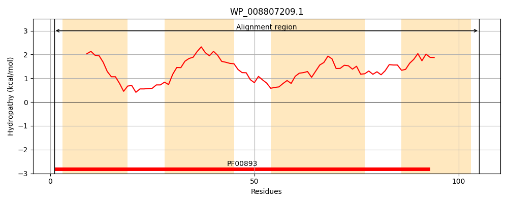
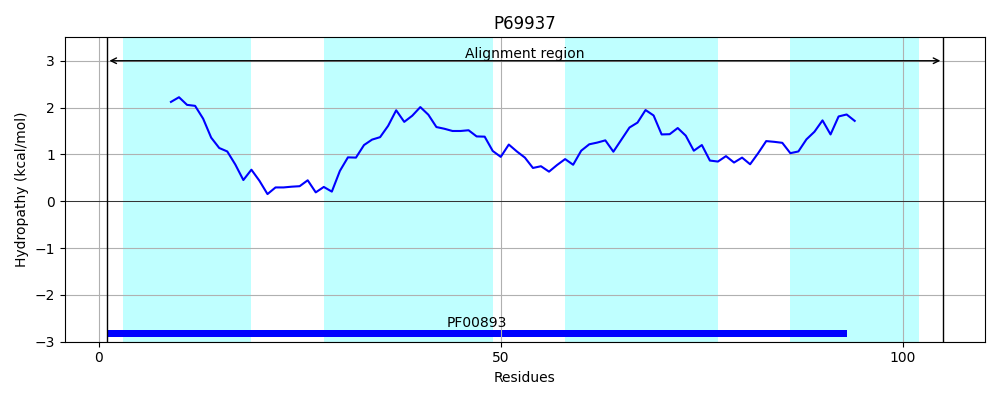
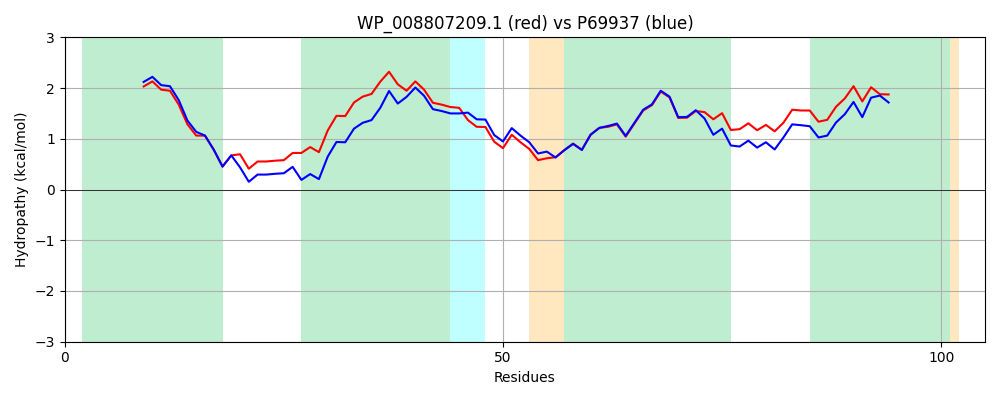

Hit Accession: P69937
Hit TCID: 2.A.7.1.4
Hit Description: gnl|BL_ORD_ID|11294 gnl|TC-DB|P69937|2.A.7.1.4 Quaternary ammonium compound-resistance protein sugE - Escherichia coli.
Mach Len: 105
e:0.000000
Query TMS Count : 4
Hit TMS Count: 4
TMS-Overlap Score: 3.600000
Predicted Substrates:CHEBI:32915;cetylpyridinium chloride, CHEBI:39561;cetyltrimethylammonium ion
BLAST Alignment:
| Protein Hydropathy Plots: | |
|---|---|
|  |  |
Pairwise Alignment-Hydropathy Plot: | |
|  | |